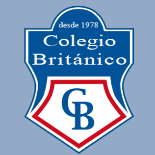
Colegio Británico Santa Cruz • Desde 1978“¡Muy buenas tardes! Bienvenidos a PURA VIDA NOTICIAS. Mi nombre es Sofia y hoy quiero llevarlos a conocer un poquito más de un hermoso país llamado Costa Rica 🇨🇷. Dos países diferentes, pero ambos llenos de cultura, naturaleza y gente maravillosa.”
Costa Rica está ubicada en Centroamérica, entre Nicaragua al Norte y Panamá al Sur, y tiene costas en dos grandes masas de agua: en el Océano Pacífico al Oeste y en el Mar Caribe al Este. Su capital es San José, centro administrativo y cultural de la nación.
Es un territorio famoso en el mundo entero por sus hermosos paisajes, playas paradisíacas, volcanes imponentes y bosques colmados de vida silvestre.
Costa Rica resguarda una enorme variedad de fauna autóctona en sus selvas húmedas, entre los que destacan monos, tucanes y los famosos perezosos.
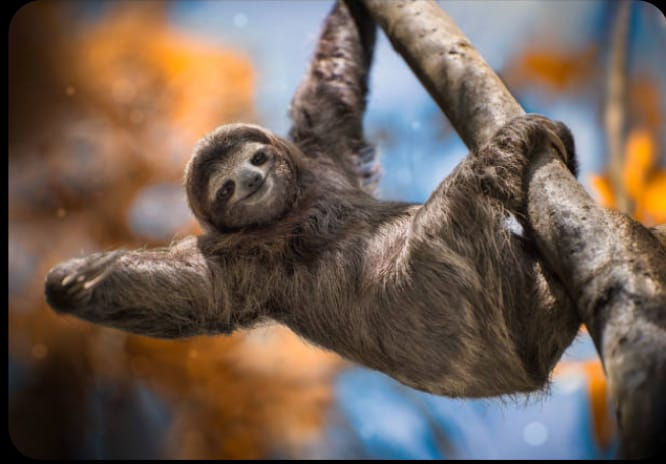
El Perezoso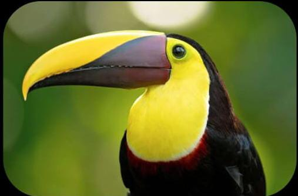
El TucánEstas especies habitan el dosel selvático y constituyen el corazón de los programas de conservación neotropical.
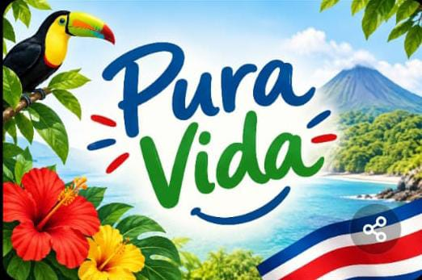
Frase insigne que los ticos usan para saludar, agradecer o expresar alegría. De ahí surge el nombre de nuestro noticiero escolar.
Y aunque Costa Rica y Bolivia son diferentes, los dos son países de Latinoamérica con una gran riqueza cultural y hermosos paisajes. Dos pueblos hermanos unidos por el continente que hoy descubrimos mediante la geografía de sus territorios y la precisión del análisis matemático escolar.
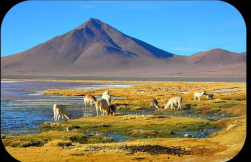
El desierto de sal continuo más grande del mundo (10.582 km²). Alberga gigantescas reservas de litio y crea un asombroso efecto espejo con las lluvias estacionales.
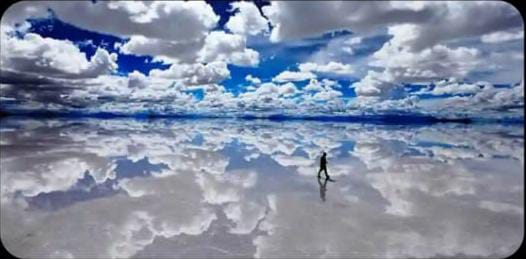
Imponentes nevados como el Illimani y valles glaciares que alimentan las cuencas del continente, modelando la geografía y la historia de los pueblos originarios.
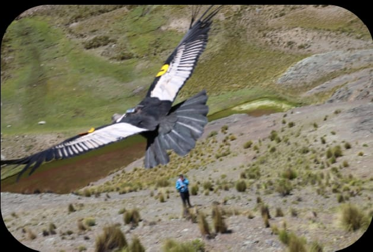
Ave insignia de los Andes que corona el Escudo Nacional de Bolivia. Simboliza la búsqueda de horizontes infinitos, la fuerza y la libertad continental.
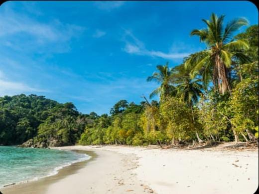
Litorales protegidos bañados por dos océanos, con arenas doradas, arrecifes de coral y cálidas aguas que acogen el desove de tortugas marinas entre palmeras.
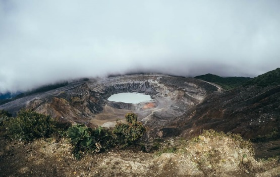
Estratovolcán activo en la Cordillera Central. Su cráter principal alcanza 1,5 km de diámetro y alberga una espectacular laguna hiperácida color turquesa.
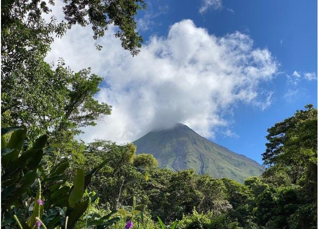
Coloso de cono casi perfecto rodeado de exuberante selva pluvial y aguas termales. Es el corazón del parque nacional homónimo y motor del ecoturismo tico.
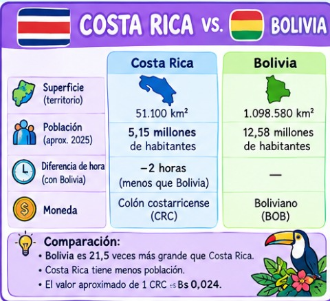
Nuestra compañera de noticiero Martina nos brinda este estudio cuantitativo entre Costa Rica y Bolivia:
Costa Rica: 51.100 km² • Bolivia: 1.098.580 km².
Conclusión: Bolivia es
21,5 veces más grande que Costa Rica.
Costa Rica: 5,15 millones de habitantes.
Bolivia: 12,58 millones de habitantes.
Costa Rica
registra menor volumen demográfico.
Costa Rica tiene -2 horas con respecto a Bolivia. Cuando en Santa Cruz son las 14:00, en San José son las 12:00 m.
Colón costarricense (CRC) vs. Boliviano (BOB).
El valor aproximado de 1 CRC es Bs
0,024 (1 BOB ≈ 41,6 colones).
“Dos países diferentes, pero ambos llenos de cultura, naturaleza y gente maravillosa.” • PURA VIDA NOTICIAS
Continuando con nuestra programación especial en PURA VIDA NOTICIAS, le damos el paso a nuestra compañera de equipo Livana, quien nos presenta una exhaustiva investigación escolar sobre los 5 datos curiosos más asombrosos de Costa Rica: hitos globales en megabiodiversidad, una república sin ejército militar, matriz eléctrica 100% limpia, santuarios en dos océanos y la alegría contagiosa de su pueblo.
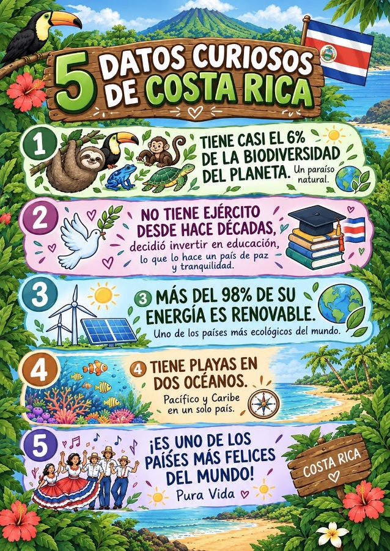
“¡Muy buenas tardes! Bienvenidos a mi segmento en PURA VIDA NOTICIAS. Hoy les traigo cinco datos asombrosos que demuestran por qué Costa Rica es un ejemplo mundial para el cuidado del medio ambiente, la paz democrática y el bienestar de las personas. ¡Descubramos juntos cada uno de estos cinco pilares!”
A pesar de ocupar apenas el 0,03% de la superficie continental del planeta (51.100 km²), Costa Rica resguarda cerca de 500.000 especies biológicas, lo que representa aproximadamente el 5,8% de la biodiversidad mundial. En sus densos bosques tropicales nubosos y litorales conviven más de 900 especies de aves (como el quetzal resplandeciente y el tucán pico iris), 250 clases de mamíferos (monos carablanca, perezosos de dos y tres dedos, jaguares y tapires), miles de mariposas y anfibios emblemáticos como la rana arbórea de ojos rojos. Más del 26% de su territorio nacional se encuentra permanentemente protegido bajo el Sistema Nacional de Áreas de Conservación (SINAC).
El 1 de diciembre de 1948, tras concluir la guerra civil, el presidente José Figueres Ferrer derribó a mazazos un muro del Cuartel Bellavista (hoy Museo Nacional) y abolió formalmente las fuerzas armadas permanentes, decisión histórica ratificada en el artículo 12 de la Constitución de 1949. Los recursos económicos que antes se destinaban a tanques, armamento pesado y cuarteles fueron transferidos íntegramente a financiar la educación pública gratuita y el sistema de salud universal de la Caja Costarricense de Seguro Social (CCSS). Costa Rica demostró que la verdadera seguridad ciudadana reside en las aulas escolares y los hospitales.
Durante más de nueve años consecutivos, Costa Rica ha generado entre el 98% y el 99,9% de toda su electricidad utilizando fuentes limpias y renovables. Esta vanguardia de ingeniería ecológica combina la fuerza del agua en centrales hidroeléctricas fluviales (cerca del 73%), el aprovechamiento del calor subterráneo de los volcanes mediante energía geotérmica de circuito cerrado (14%), la potencia de parques eólicos en las cordilleras (12%) y la radiación solar. Este modelo ejemplar sitúa a la nación en la vanguardia del Plan Nacional de Descarbonización rumbo a una economía con cero emisiones netas.
Gracias a su condición de puente ístmico interoceánico, el país posee 1.228 km de litorales bañados por dos grandes masas de agua: el Océano Pacífico al Oeste (con extensas penínsulas, rompientes para el surf y el Parque Nacional Corcovado) y el Mar Caribe al Este (con canales naturales navegables en Tortuguero, manglares y arrecifes de coral en Cahuita). Además, gracias a la emblemática Isla del Coco —Patrimonio Natural de la Humanidad UNESCO—, su territorio marino protegido alcanza más de 574.000 km², superando por más de diez veces toda su superficie continental.
Costa Rica se ubica constantemente en los primeros lugares globales del Happy Planet Index (HPI) y es el país más feliz de América Latina según el Informe Mundial de la Felicidad de la ONU. Este bienestar se sustenta en la paz civil, acceso equitativo al agua potable y la filosofía del “¡Pura vida!”, que promueve la gratitud, el optimismo y la solidaridad cotidiana. Asimismo, la Península de Nicoya es una de las únicas cinco "Zonas Azules" del planeta, donde una notable proporción de habitantes supera los 100 años con vitalidad física, gracias a su dieta saludable, agua rica en calcio y sólidos lazos comunitarios.
Seguimos con nuestra programación de PURA VIDA NOTICIAS y toca darle paso a nuestra corresponsal Rafaela, quien nos habla sobre los símbolos patrios y nacionales, sus trajes típicos y el folclor de la hermosa Costa Rica, completando con las comidas típicas más queridas por su pueblo.
Bandera (1848): Inspirada en Francia. Azul (el cielo protector), Blanco (la paz y sabiduría) y Rojo (energía, valentía y trabajo por la libertad).
Escudo e Himno: Escudo (1848/1998) con volcanes, dos océanos y barcos. Himno Nacional (1852/1903): canto a la paz y al trabajo sin ensalzar la guerra.
Emblemas: Guaria morada (1939, unión familiar), Árbol de Guanacaste (1959, fortaleza y Anexión de Nicoya), Ave Yigüirro (1977, anuncio de lluvias) y la Carreta típica (1988, Patrimonio UNESCO 2005).
Traje de la Mujer: Blusa o cotona blanca con finos encajes y vuelos; enagua amplia y muy colorida decorada con cintas en tonos vivos (rojo, azul y blanco); faja roja en la cintura, cinta negra al cuello con medalla y trenzas con flores naturales de guaria morada.
Traje del Hombre: Camisa blanca o de manta con botones al frente; pantalón de dril o mezclilla; pañuelo rojo o azul anudado al cuello, faja en la cintura y el tradicional sombrero de paja campesino o chonete blanco, orgullo del labrador tico.
Por medio de ella los costarricenses se identifican como miembros de una comunidad como lo es Guanacaste, cuna del folclor auténtico. La marimba es el instrumento más importante del país: a su alrededor gira la actividad cultural, artística y tradicional en cada festividad patria.
Gallo pinto: Arroz y frijoles mezclados y salteados, con huevo, plátano y aguacate (desayuno insigne). Casado: Plato tradicional completo con arroz, frijoles, carne, ensalada y plátano maduro. Sopa de mondongo: Caldo nutritivo y reconfortante con verduras y especias criollas.
Hoy tenemos a nuestra compañera Keila en PURA VIDA NOTICIAS, quien nos presenta un exhaustivo análisis comparativo entre Costa Rica y Bolivia en cuanto a su división política, geografía, cultura, economía y biodiversidad, ilustrado con los recursos visuales oficiales de nuestra investigación escolar.
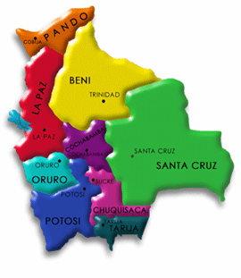
🇨🇷 Costa Rica7 Provincias (San José, Alajuela, Cartago, Heredia, Guanacaste, Puntarenas, Limón)
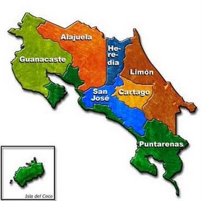
🇧🇴 Bolivia9 Departamentos (La Paz, Santa Cruz, Cbba, Oruro, Potosí, Chuquisaca, Tarija, Beni, Pando)
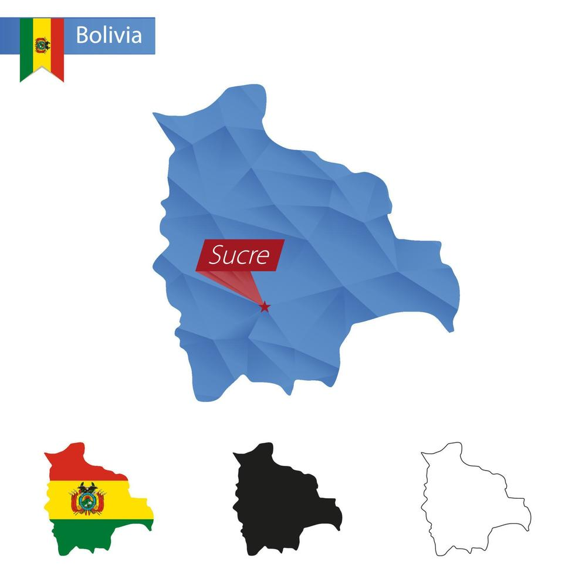
🇨🇷 Costa RicaSan José: Capital nacional, sede de los tres poderes del Estado y centro financiero.
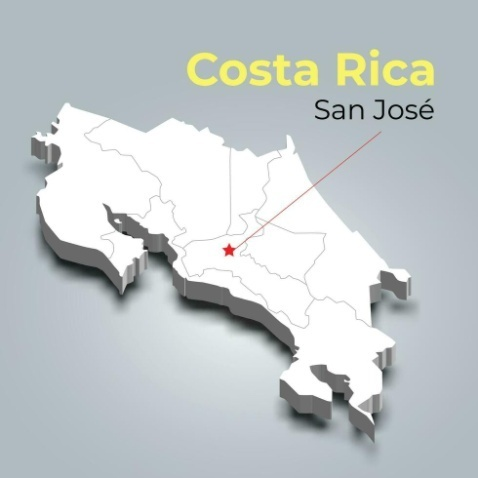
🇧🇴 BoliviaSucre: Capital Histórica y Constitucional (con La Paz como sede de gobierno).
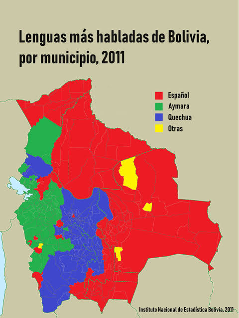
🇨🇷 Costa RicaEspañol: Idioma oficial, complementado con lenguas indígenas como bribri y cabécar.
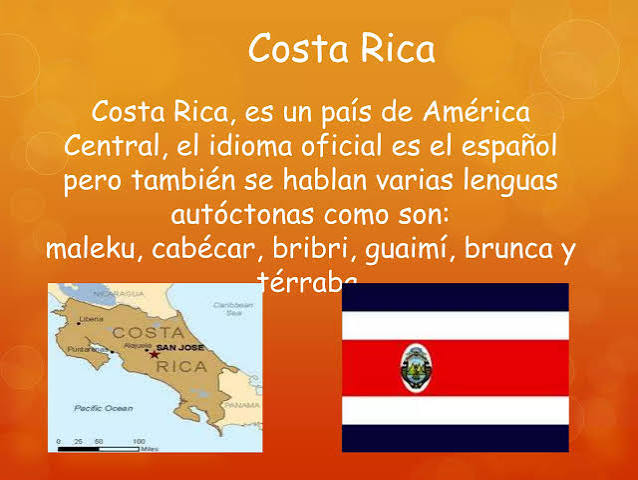
🇧🇴 BoliviaPlurilingüe: Castellano y 36 idiomas oficiales originarios (quechua, aymara, guaraní).
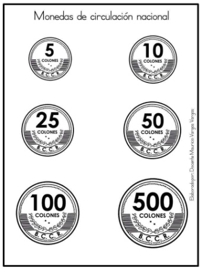
🇨🇷 Costa RicaColón (₡ CRC): Billetes ilustrados con flora, fauna y ecosistemas protegidos.
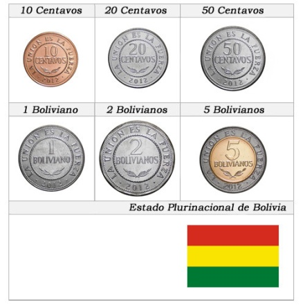
🇧🇴 BoliviaBoliviano (Bs BOB): Moneda soberana con próceres, patrimonio histórico y biodiversidad.
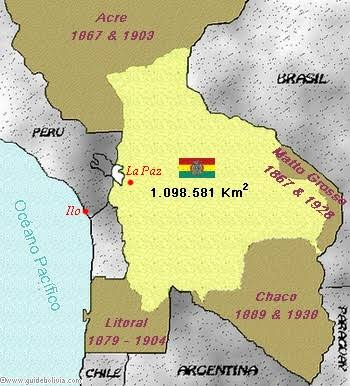
🇨🇷 Costa Rica51.100 km²: Puente ístmico compacto con altísima densidad biológica por kilómetro cuadrado.
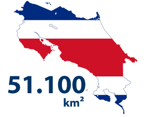
🇧🇴 Bolivia1.098.581 km²: 21,5 veces mayor que Costa Rica, abarcando Andes, Chaco y Amazonía.
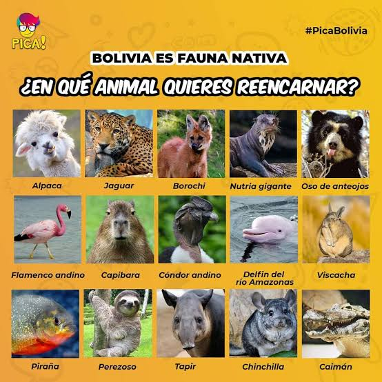
🇨🇷 Costa RicaPerezosos, tucanes pico iris, monos carablanca, quetzales y ranas arborícolas de ojos rojos.
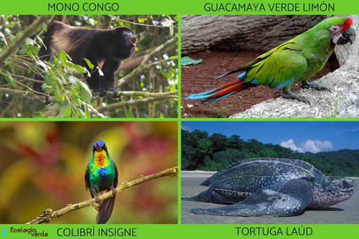
🇧🇴 BoliviaCóndores andinos, llamas, osos jucumari (de anteojos), capibaras y bufeos rosados de río.
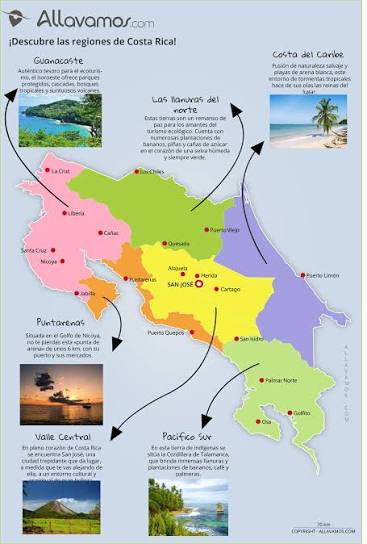
🇨🇷 Costa RicaParque Manuel Antonio, Volcán Arenal, canales de Tortuguero y playas del Pacífico y Caribe.
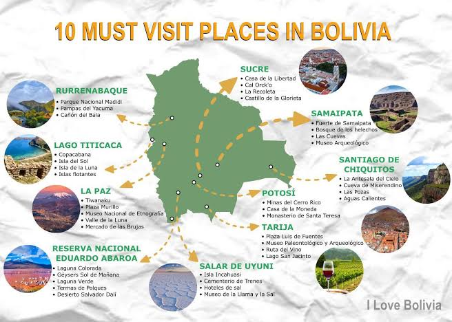
🇧🇴 BoliviaSalar de Uyuni, Lago Titicaca, Parque Madidi, Tiwanaku y las Misiones de Chiquitos.
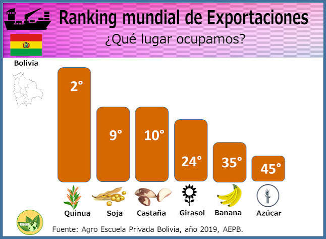
🇨🇷 Costa RicaDispositivos médicos de alta tecnología, café gourmet, banano, piña y servicios ecoturísticos.
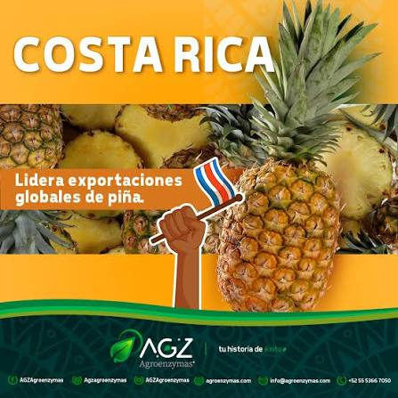
🇧🇴 BoliviaGas natural, minerales (litio, zinc, estaño), productos agroindustriales (soya, quinua) y manufacturas.
Y de esta manera es como ya vamos llegando a la parte final de nuestra programación con PURA VIDA NOTICIAS. Para ello, está en exteriores nuestro colega de trabajo Farid, quien nos habla sobre la biodiversidad de la fauna existente en ambos países y concluye con la dinámica pedagógica del pasaporte escolar.
Costa Rica acoge al perezoso de tres dedos, tucán pico iris, mono carablanca, rana arborícola de ojos rojos, tortuga marina verde y quetzal resplandeciente en un territorio compacto.
El jaguar, el puma, el tapir y el caimán habitan tanto en Costa Rica como en Bolivia, demostrando que la naturaleza no reconoce fronteras humanas.
“Es un documento que sirve para acreditar la identidad y nacionalidad de una persona, fuera de su país.” En nuestra feria escolar, este pasaporte certifica tu misión: ¡cuidar el planeta y proteger la biodiversidad!
“Esto fue nuestra presentación de PURA VIDA NOTICIAS. ¡Gracias por acompañarnos, hasta una nueva oportunidad, tengan todos, muy buenas tardes!”